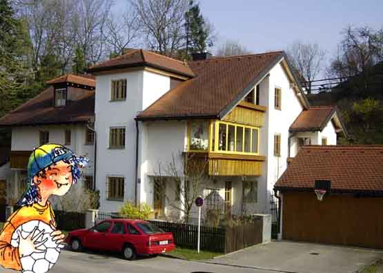
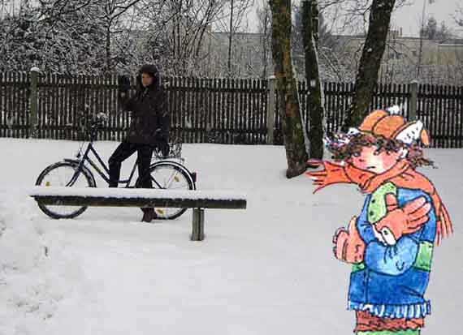
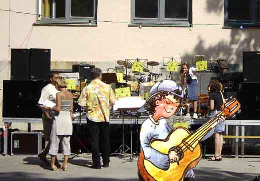
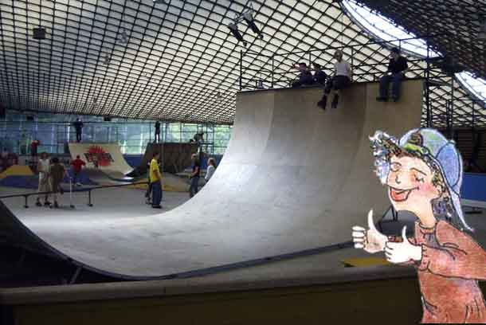
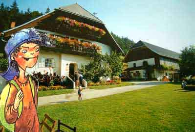
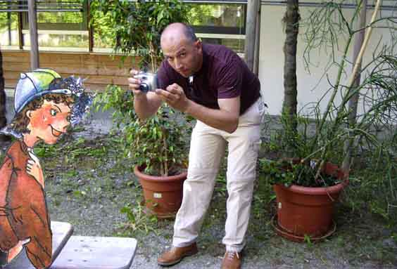
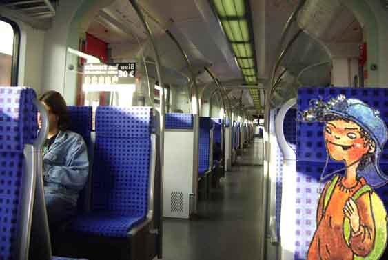
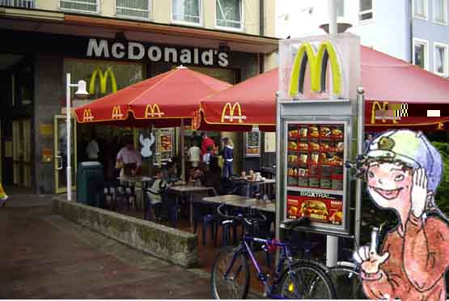

Servus, Leute. Ich bin Ramon Santos. Ich bin 13 und meine Familie kommt aus Venezuela. Seit 7 Jahren wohnen wir in München. In diesem großen schönen Haus am Stadtrand. Das Haus teilen wir mit drei anderen Familien. Im Sommer ist es hier ganz toll. Man kann im Wald spazieren gehen und auf der Wiese Fußball spielen.

Den Winter mag ich nicht. Es ist immer so kalt. Und es schneit. Am liebsten sitze ich zu Hause und spiele Computer. Aber meine Tante Elena fährt auch bei diesem Wetter Fahrrad. Erwachsene können manchmal echt verrückt sein!

Ich höre gern Musik: Pop und Techno, und ich spiele Gitarre, aber nicht nur ab Noten! Ich improvisiere selbst. Das macht so viel Spaß! Ich spiele auch in der Musikband unseres Gymnasiums und habe schon an drei Schulkonzerten teilgenommen.

Inlineskating finde ich einfach cool. Diese große Halfpipe rauf und runterfahren – das kann echt nicht jeder!

Mein Onkel hat eine Pension in den Alpen. Im August besuche ich ihn. Da ist natürlich nicht viel los. Aber man kann wandern und zelten. Und die Berge sind natürlich sehr schön!

Das ist mein Vater. Er heißt Sandro und sein Hobby ist Fotografieren. Er hat seine Fotokamera immer dabei und macht dauernd Fotos. Manchmal nervt das total.

In die Schule fahre ich mit der S-Bahn. Ich brauche etwa 25 Minuten. Und dann noch 10 Minuten zu Fuß. Aber ich fahre gern mit der S-Bahn. Da kann ich lesen, oder ich höre Musik. Manchmal mache ich sogar meine Schularbeiten.

Mein Lieblingsessen sind Hamburger und Pommes frites, deswegen gehe ich oft in McDonald's. Natürlich nicht jeden Tag, denn das Zeug ist mächtig ungesund und hat viele Kalorien. Aber schmecken tut es wirklich gut.